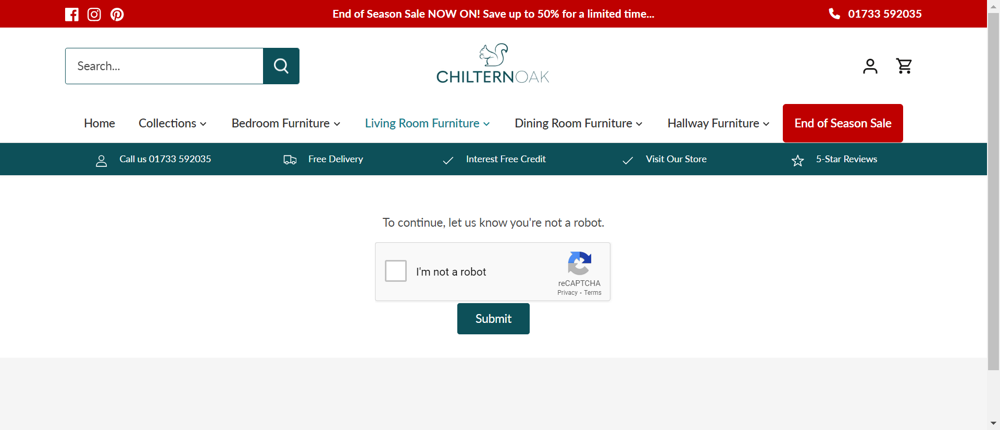
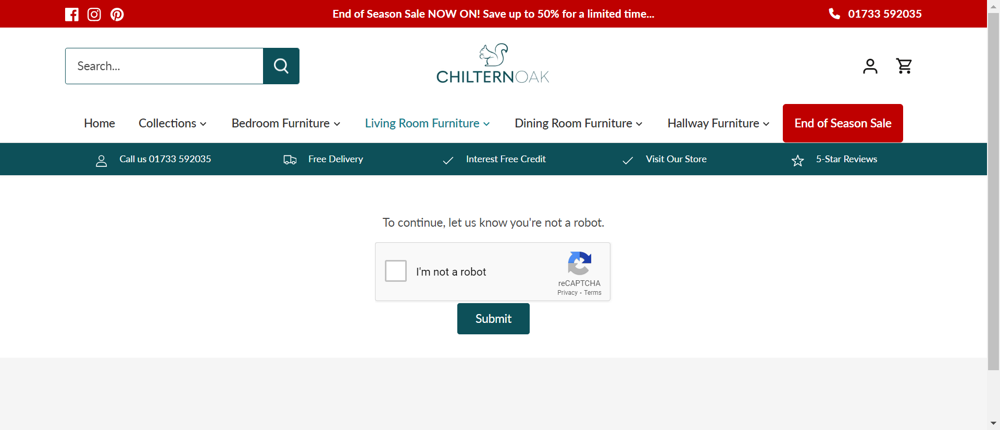
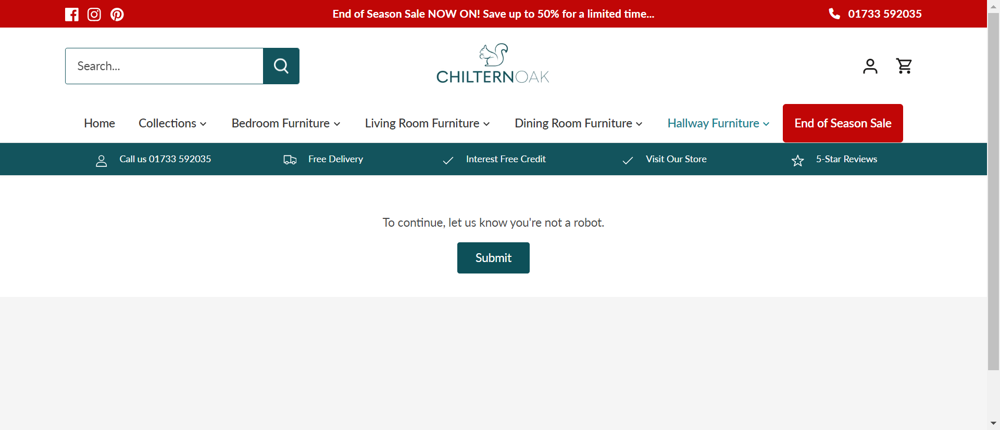
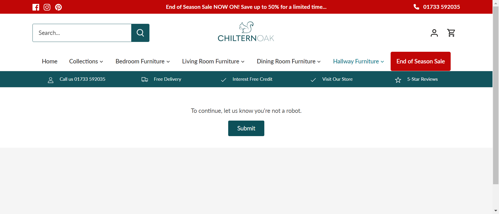
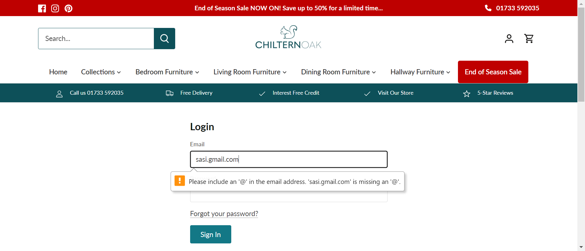
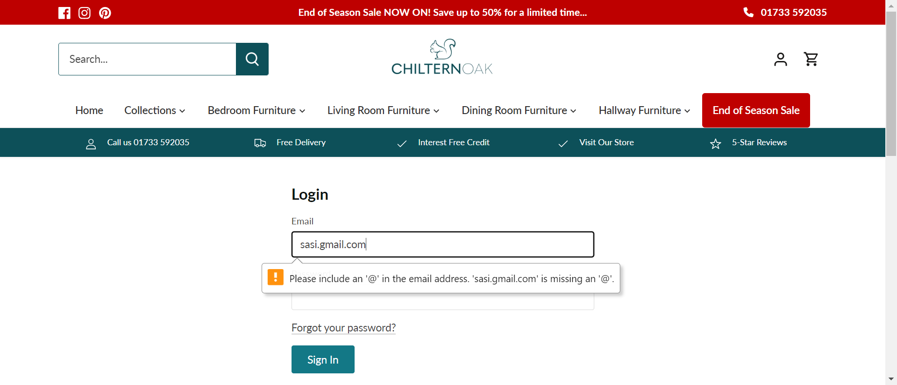

-
SignUp fuctionality
4:17:22 pm / 00:12:35:802 Fail
SignUp fuctionality
02.28.2024 4:17:22 pm 02.28.2024 4:29:58 pm 00:12:35:802 · #test-id=1FailTo test the SigUp functionality of Chiltern Oak pageFailTo test the SigUp functionality of Chiltern Oak pageGiven user navigates to the signup pageWhen the user enters their first name as 'User'And the user enters their last name as 'A'And the user enters their email as 'sa7997@gmail.com'And the user enters their password as 'Qs'And the user click on create bottonThen the user should see the status as "Password is too short (minimum is 5 characters)"com.project.rll.steps.BaseTest.tearDown(io.cucumber.java.Scenario)To test the SigUp functionality of Chiltern Oak page FailTo test the SigUp functionality of Chiltern Oak pageGiven user navigates to the signup pageWhen the user enters their first name as 'User'And the user enters their last name as 'A'And the user enters their email as 'sa7997@gmail.com'And the user enters their password as 'Qs'And the user click on create bottonThen the user should see the status as "Password is too short (minimum is 5 characters)"com.project.rll.steps.BaseTest.tearDown(io.cucumber.java.Scenario)To test the SigUp functionality of Chiltern Oak page
FailTo test the SigUp functionality of Chiltern Oak pageGiven user navigates to the signup pageWhen the user enters their first name as 'User'And the user enters their last name as 'A'And the user enters their email as 'sa7997@gmail.com'And the user enters their password as 'Qs'And the user click on create bottonThen the user should see the status as "Password is too short (minimum is 5 characters)"com.project.rll.steps.BaseTest.tearDown(io.cucumber.java.Scenario)To test the SigUp functionality of Chiltern Oak page FailTo test the SigUp functionality of Chiltern Oak pageGiven user navigates to the signup pageWhen the user enters their first name as 'User'And the user enters their last name as 'A'And the user enters their email as 'sa7997@gmail.com'And the user enters their password as 'Qs'And the user click on create bottonThen the user should see the status as "Password is too short (minimum is 5 characters)"com.project.rll.steps.BaseTest.tearDown(io.cucumber.java.Scenario)To test the SigUp functionality of Chiltern Oak page
FailTo test the SigUp functionality of Chiltern Oak pageGiven user navigates to the signup pageWhen the user enters their first name as 'User'And the user enters their last name as 'A'And the user enters their email as 'sa7997@gmail.com'And the user enters their password as 'Qs'And the user click on create bottonThen the user should see the status as "Password is too short (minimum is 5 characters)"com.project.rll.steps.BaseTest.tearDown(io.cucumber.java.Scenario)To test the SigUp functionality of Chiltern Oak page FailTo test the SigUp functionality of Chiltern Oak pageGiven user navigates to the signup pageWhen the user enters their first name as 'User'And the user enters their last name as 'A'And the user enters their email as 'sa7997@gmail.com'And the user enters their password as 'Qs'And the user click on create bottonThen the user should see the status as "Password is too short (minimum is 5 characters)"com.project.rll.steps.BaseTest.tearDown(io.cucumber.java.Scenario)To test the SigUp functionality of Chiltern Oak page
FailTo test the SigUp functionality of Chiltern Oak pageGiven user navigates to the signup pageWhen the user enters their first name as 'User'And the user enters their last name as 'A'And the user enters their email as 'sa7997@gmail.com'And the user enters their password as 'Qs'And the user click on create bottonThen the user should see the status as "Password is too short (minimum is 5 characters)"com.project.rll.steps.BaseTest.tearDown(io.cucumber.java.Scenario)To test the SigUp functionality of Chiltern Oak page FailTo test the SigUp functionality of Chiltern Oak pageGiven user navigates to the signup pageWhen the user enters their first name as 'User'And the user enters their last name as 'A'And the user enters their email as ''And the user enters their password as 'Qseasfrr@123'And the user click on create bottonThen the user should see the status as "Email can't be blanK."com.project.rll.steps.BaseTest.tearDown(io.cucumber.java.Scenario)To test the SigUp functionality of Chiltern Oak page
FailTo test the SigUp functionality of Chiltern Oak pageGiven user navigates to the signup pageWhen the user enters their first name as 'User'And the user enters their last name as 'A'And the user enters their email as ''And the user enters their password as 'Qseasfrr@123'And the user click on create bottonThen the user should see the status as "Email can't be blanK."com.project.rll.steps.BaseTest.tearDown(io.cucumber.java.Scenario)To test the SigUp functionality of Chiltern Oak page FailTo test the SigUp functionality of Chiltern Oak pageGiven user navigates to the signup pageWhen the user enters their first name as 'User'And the user enters their last name as 'A'And the user enters their email as ''And the user enters their password as 'Qseasfrr@123'And the user click on create bottonThen the user should see the status as "Email can't be blanK."com.project.rll.steps.BaseTest.tearDown(io.cucumber.java.Scenario)To test the SigUp functionality of Chiltern Oak page
FailTo test the SigUp functionality of Chiltern Oak pageGiven user navigates to the signup pageWhen the user enters their first name as 'User'And the user enters their last name as 'A'And the user enters their email as ''And the user enters their password as 'Qseasfrr@123'And the user click on create bottonThen the user should see the status as "Email can't be blanK."com.project.rll.steps.BaseTest.tearDown(io.cucumber.java.Scenario)To test the SigUp functionality of Chiltern Oak page FailTo test the SigUp functionality of Chiltern Oak pageGiven user navigates to the signup pageWhen the user enters their first name as 'User'And the user enters their last name as 'A'And the user enters their email as ''And the user enters their password as 'Qseasfrr@123'And the user click on create bottonThen the user should see the status as "Email can't be blanK."com.project.rll.steps.BaseTest.tearDown(io.cucumber.java.Scenario)To test the SigUp functionality of Chiltern Oak page
FailTo test the SigUp functionality of Chiltern Oak pageGiven user navigates to the signup pageWhen the user enters their first name as 'User'And the user enters their last name as 'A'And the user enters their email as ''And the user enters their password as 'Qseasfrr@123'And the user click on create bottonThen the user should see the status as "Email can't be blanK."com.project.rll.steps.BaseTest.tearDown(io.cucumber.java.Scenario)To test the SigUp functionality of Chiltern Oak page FailTo test the SigUp functionality of Chiltern Oak pageGiven user navigates to the signup pageWhen the user enters their first name as 'User'And the user enters their last name as 'A'Step skippedAnd the user enters their email as ''Step skippedAnd the user enters their password as 'Qseasfrr@123'Step skippedAnd the user click on create bottonStep skippedThen the user should see the status as "Email can't be blanK."Step skippedcom.project.rll.steps.BaseTest.tearDown(io.cucumber.java.Scenario)To test the SigUp functionality of Chiltern Oak page
FailTo test the SigUp functionality of Chiltern Oak pageGiven user navigates to the signup pageWhen the user enters their first name as 'User'And the user enters their last name as 'A'Step skippedAnd the user enters their email as ''Step skippedAnd the user enters their password as 'Qseasfrr@123'Step skippedAnd the user click on create bottonStep skippedThen the user should see the status as "Email can't be blanK."Step skippedcom.project.rll.steps.BaseTest.tearDown(io.cucumber.java.Scenario)To test the SigUp functionality of Chiltern Oak page FailTo test the SigUp functionality of Chiltern Oak pageGiven user navigates to the signup pageWhen the user enters their first name as 'User'Step skippedAnd the user enters their last name as ''Step skippedAnd the user enters their email as 'wsfagfhgra@gmail.com'Step skippedAnd the user enters their password as 'Qsesafrr'Step skippedAnd the user click on create bottonStep skippedThen the user should see the status as "This email address is already associated with an account."Step skippedcom.project.rll.steps.BaseTest.tearDown(io.cucumber.java.Scenario)To test the SigUp functionality of Chiltern Oak page
FailTo test the SigUp functionality of Chiltern Oak pageGiven user navigates to the signup pageWhen the user enters their first name as 'User'Step skippedAnd the user enters their last name as ''Step skippedAnd the user enters their email as 'wsfagfhgra@gmail.com'Step skippedAnd the user enters their password as 'Qsesafrr'Step skippedAnd the user click on create bottonStep skippedThen the user should see the status as "This email address is already associated with an account."Step skippedcom.project.rll.steps.BaseTest.tearDown(io.cucumber.java.Scenario)To test the SigUp functionality of Chiltern Oak page FailTo test the SigUp functionality of Chiltern Oak pageGiven user navigates to the signup pageWhen the user enters their first name as 'User'Step skippedAnd the user enters their last name as ''Step skippedAnd the user enters their email as 'wsfagfhgra@gmail.com'Step skippedAnd the user enters their password as 'Qsesafrr'Step skippedAnd the user click on create bottonStep skippedThen the user should see the status as "This email address is already associated with an account."Step skippedcom.project.rll.steps.BaseTest.tearDown(io.cucumber.java.Scenario)To test the SigUp functionality of Chiltern Oak page
FailTo test the SigUp functionality of Chiltern Oak pageGiven user navigates to the signup pageWhen the user enters their first name as 'User'Step skippedAnd the user enters their last name as ''Step skippedAnd the user enters their email as 'wsfagfhgra@gmail.com'Step skippedAnd the user enters their password as 'Qsesafrr'Step skippedAnd the user click on create bottonStep skippedThen the user should see the status as "This email address is already associated with an account."Step skippedcom.project.rll.steps.BaseTest.tearDown(io.cucumber.java.Scenario)To test the SigUp functionality of Chiltern Oak page FailTo test the SigUp functionality of Chiltern Oak pageGiven user navigates to the signup pageWhen the user enters their first name as 'User'Step skippedAnd the user enters their last name as ''Step skippedAnd the user enters their email as 'wsfagfhgra@gmail.com'Step skippedAnd the user enters their password as 'Qsesafrr'Step skippedAnd the user click on create bottonStep skippedThen the user should see the status as "This email address is already associated with an account."Step skippedcom.project.rll.steps.BaseTest.tearDown(io.cucumber.java.Scenario)To test the SigUp functionality of Chiltern Oak page
FailTo test the SigUp functionality of Chiltern Oak pageGiven user navigates to the signup pageWhen the user enters their first name as 'User'Step skippedAnd the user enters their last name as ''Step skippedAnd the user enters their email as 'wsfagfhgra@gmail.com'Step skippedAnd the user enters their password as 'Qsesafrr'Step skippedAnd the user click on create bottonStep skippedThen the user should see the status as "This email address is already associated with an account."Step skippedcom.project.rll.steps.BaseTest.tearDown(io.cucumber.java.Scenario)To test the SigUp functionality of Chiltern Oak page FailTo test the SigUp functionality of Chiltern Oak pageGiven user navigates to the signup pageWhen the user enters their first name as 'User'Step skippedAnd the user enters their last name as ''Step skippedAnd the user enters their email as 'wsfagfhgra@gmail.com'Step skippedAnd the user enters their password as 'Qsesafrr'Step skippedAnd the user click on create bottonStep skippedThen the user should see the status as "This email address is already associated with an account."Step skippedcom.project.rll.steps.BaseTest.tearDown(io.cucumber.java.Scenario)To test the SigUp functionality of Chiltern Oak pageFailTo test the SigUp functionality of Chiltern Oak pageGiven user navigates to the signup pageWhen the user enters their first name as ''And the user enters their last name as ''And the user enters their email as ''And the user enters their password as ''And the user click on create bottonThen the user should see the status as "Password can't be blank."com.project.rll.steps.BaseTest.tearDown(io.cucumber.java.Scenario)To test the SigUp functionality of Chiltern Oak pageFailTo test the SigUp functionality of Chiltern Oak pageGiven user navigates to the signup pageWhen the user enters their first name as ''And the user enters their last name as ''And the user enters their email as ''And the user enters their password as ''And the user click on create bottonThen the user should see the status as "Password can't be blank."com.project.rll.steps.BaseTest.tearDown(io.cucumber.java.Scenario)To test the SigUp functionality of Chiltern Oak page
FailTo test the SigUp functionality of Chiltern Oak pageGiven user navigates to the signup pageWhen the user enters their first name as 'User'Step skippedAnd the user enters their last name as ''Step skippedAnd the user enters their email as 'wsfagfhgra@gmail.com'Step skippedAnd the user enters their password as 'Qsesafrr'Step skippedAnd the user click on create bottonStep skippedThen the user should see the status as "This email address is already associated with an account."Step skippedcom.project.rll.steps.BaseTest.tearDown(io.cucumber.java.Scenario)To test the SigUp functionality of Chiltern Oak pageFailTo test the SigUp functionality of Chiltern Oak pageGiven user navigates to the signup pageWhen the user enters their first name as ''And the user enters their last name as ''And the user enters their email as ''And the user enters their password as ''And the user click on create bottonThen the user should see the status as "Password can't be blank."com.project.rll.steps.BaseTest.tearDown(io.cucumber.java.Scenario)To test the SigUp functionality of Chiltern Oak pageFailTo test the SigUp functionality of Chiltern Oak pageGiven user navigates to the signup pageWhen the user enters their first name as ''And the user enters their last name as ''And the user enters their email as ''And the user enters their password as ''And the user click on create bottonThen the user should see the status as "Password can't be blank."com.project.rll.steps.BaseTest.tearDown(io.cucumber.java.Scenario)To test the SigUp functionality of Chiltern Oak page FailTo test the SigUp functionality of Chiltern Oak pageGiven user navigates to the signup pageWhen the user enters their first name as ''And the user enters their last name as ''And the user enters their email as ''And the user enters their password as ''And the user click on create bottonThen the user should see the status as "Password can't be blank."com.project.rll.steps.BaseTest.tearDown(io.cucumber.java.Scenario)To test the SigUp functionality of Chiltern Oak page
FailTo test the SigUp functionality of Chiltern Oak pageGiven user navigates to the signup pageWhen the user enters their first name as ''And the user enters their last name as ''And the user enters their email as ''And the user enters their password as ''And the user click on create bottonThen the user should see the status as "Password can't be blank."com.project.rll.steps.BaseTest.tearDown(io.cucumber.java.Scenario)To test the SigUp functionality of Chiltern Oak page FailTo test the SigUp functionality of Chiltern Oak pageGiven user navigates to the signup pageWhen the user enters their first name as ''And the user enters their last name as ''And the user enters their email as ''And the user enters their password as ''And the user click on create bottonThen the user should see the status as "Password can't be blank."com.project.rll.steps.BaseTest.tearDown(io.cucumber.java.Scenario)To test the SigUp functionality of Chiltern Oak page
FailTo test the SigUp functionality of Chiltern Oak pageGiven user navigates to the signup pageWhen the user enters their first name as ''And the user enters their last name as ''And the user enters their email as ''And the user enters their password as ''And the user click on create bottonThen the user should see the status as "Password can't be blank."com.project.rll.steps.BaseTest.tearDown(io.cucumber.java.Scenario)To test the SigUp functionality of Chiltern Oak page FailTo test the SigUp functionality of Chiltern Oak pageGiven user navigates to the signup pageWhen the user enters their first name as 'User'And the user enters their last name as 'A'And the user enters their email as 'wsgjhfa012@gmail.com'And the user enters their password as 'Qasfserr@123'And the user click on create bottonThen the user should see the status as "This email address is already associated with an account."com.project.rll.steps.BaseTest.tearDown(io.cucumber.java.Scenario)To test the SigUp functionality of Chiltern Oak page
FailTo test the SigUp functionality of Chiltern Oak pageGiven user navigates to the signup pageWhen the user enters their first name as 'User'And the user enters their last name as 'A'And the user enters their email as 'wsgjhfa012@gmail.com'And the user enters their password as 'Qasfserr@123'And the user click on create bottonThen the user should see the status as "This email address is already associated with an account."com.project.rll.steps.BaseTest.tearDown(io.cucumber.java.Scenario)To test the SigUp functionality of Chiltern Oak page FailTo test the SigUp functionality of Chiltern Oak pageGiven user navigates to the signup pageWhen the user enters their first name as 'User'And the user enters their last name as 'A'And the user enters their email as 'wsgjhfa012@gmail.com'And the user enters their password as 'Qasfserr@123'And the user click on create bottonThen the user should see the status as "This email address is already associated with an account."com.project.rll.steps.BaseTest.tearDown(io.cucumber.java.Scenario)To test the SigUp functionality of Chiltern Oak page
FailTo test the SigUp functionality of Chiltern Oak pageGiven user navigates to the signup pageWhen the user enters their first name as 'User'And the user enters their last name as 'A'And the user enters their email as 'wsgjhfa012@gmail.com'And the user enters their password as 'Qasfserr@123'And the user click on create bottonThen the user should see the status as "This email address is already associated with an account."com.project.rll.steps.BaseTest.tearDown(io.cucumber.java.Scenario)To test the SigUp functionality of Chiltern Oak page FailTo test the SigUp functionality of Chiltern Oak pageGiven user navigates to the signup pageWhen the user enters their first name as 'User'And the user enters their last name as 'A'And the user enters their email as 'wsgjhfa012@gmail.com'And the user enters their password as 'Qasfserr@123'And the user click on create bottonThen the user should see the status as "This email address is already associated with an account."com.project.rll.steps.BaseTest.tearDown(io.cucumber.java.Scenario)To test the SigUp functionality of Chiltern Oak page
FailTo test the SigUp functionality of Chiltern Oak pageGiven user navigates to the signup pageWhen the user enters their first name as 'User'And the user enters their last name as 'A'And the user enters their email as 'wsgjhfa012@gmail.com'And the user enters their password as 'Qasfserr@123'And the user click on create bottonThen the user should see the status as "This email address is already associated with an account."com.project.rll.steps.BaseTest.tearDown(io.cucumber.java.Scenario)To test the SigUp functionality of Chiltern Oak page FailTo test the SigUp functionality of Chiltern Oak pageGiven user navigates to the signup pageWhen the user enters their first name as 'User'And the user enters their last name as 'A'And the user enters their email as 'wsgjhfa012@gmail.com'And the user enters their password as 'Qasfserr@123'And the user click on create bottonThen the user should see the status as "This email address is already associated with an account."com.project.rll.steps.BaseTest.tearDown(io.cucumber.java.Scenario)To test the SigUp functionality of Chiltern Oak page
FailTo test the SigUp functionality of Chiltern Oak pageGiven user navigates to the signup pageWhen the user enters their first name as 'User'And the user enters their last name as 'A'And the user enters their email as 'wsgjhfa012@gmail.com'And the user enters their password as 'Qasfserr@123'And the user click on create bottonThen the user should see the status as "This email address is already associated with an account."com.project.rll.steps.BaseTest.tearDown(io.cucumber.java.Scenario)To test the SigUp functionality of Chiltern Oak page
-
Login Functionality
4:29:58 pm / 00:12:49:451 Fail
Login Functionality
02.28.2024 4:29:58 pm 02.28.2024 4:42:47 pm 00:12:49:451 · #test-id=203FailUser login with different credentials by using excelFailUser login with different credentials by using excelGiven user navigates to the login pageWhen user enters username and password by giving "login" and 1And clicks the login buttonStep skippedThen verify user is able to login checking "https://www.chilternoakfurniture.co.uk/account/login?return_url=%2Faccount"Step skippedcom.project.rll.steps.BaseTest.tearDown(io.cucumber.java.Scenario)User login with different credentials by using excelFailUser login with different credentials by using excelGiven user navigates to the login pageWhen user enters username and password by giving "login" and 1And clicks the login buttonStep skippedThen verify user is able to login checking "https://www.chilternoakfurniture.co.uk/account/login?return_url=%2Faccount"Step skippedcom.project.rll.steps.BaseTest.tearDown(io.cucumber.java.Scenario)User login with different credentials by using excelFailUser login with different credentials by using excelGiven user navigates to the login pageWhen user enters username and password by giving "login" and 1And clicks the login buttonStep skippedThen verify user is able to login checking "https://www.chilternoakfurniture.co.uk/account/login?return_url=%2Faccount"Step skippedcom.project.rll.steps.BaseTest.tearDown(io.cucumber.java.Scenario)User login with different credentials by using excelFailUser login with different credentials by using excelGiven user navigates to the login pageWhen user enters username and password by giving "login" and 1And clicks the login buttonStep skippedThen verify user is able to login checking "https://www.chilternoakfurniture.co.uk/account/login?return_url=%2Faccount"Step skippedcom.project.rll.steps.BaseTest.tearDown(io.cucumber.java.Scenario)User login with different credentials by using excel FailUser login with different credentials by using excelGiven user navigates to the login pageWhen user enters username and password by giving "login" and 2And clicks the login buttonStep skippedThen verify user is able to login checking "https://www.chilternoakfurniture.co.uk/account/login?return_url=%2Faccount"Step skippedcom.project.rll.steps.BaseTest.tearDown(io.cucumber.java.Scenario)User login with different credentials by using excel
FailUser login with different credentials by using excelGiven user navigates to the login pageWhen user enters username and password by giving "login" and 2And clicks the login buttonStep skippedThen verify user is able to login checking "https://www.chilternoakfurniture.co.uk/account/login?return_url=%2Faccount"Step skippedcom.project.rll.steps.BaseTest.tearDown(io.cucumber.java.Scenario)User login with different credentials by using excel FailUser login with different credentials by using excelGiven user navigates to the login pageWhen user enters username and password by giving "login" and 2And clicks the login buttonStep skippedThen verify user is able to login checking "https://www.chilternoakfurniture.co.uk/account/login?return_url=%2Faccount"Step skippedcom.project.rll.steps.BaseTest.tearDown(io.cucumber.java.Scenario)User login with different credentials by using excel
FailUser login with different credentials by using excelGiven user navigates to the login pageWhen user enters username and password by giving "login" and 2And clicks the login buttonStep skippedThen verify user is able to login checking "https://www.chilternoakfurniture.co.uk/account/login?return_url=%2Faccount"Step skippedcom.project.rll.steps.BaseTest.tearDown(io.cucumber.java.Scenario)User login with different credentials by using excel FailUser login with different credentials by using excelGiven user navigates to the login pageWhen user enters username and password by giving "login" and 2And clicks the login buttonStep skippedThen verify user is able to login checking "https://www.chilternoakfurniture.co.uk/account/login?return_url=%2Faccount"Step skippedcom.project.rll.steps.BaseTest.tearDown(io.cucumber.java.Scenario)User login with different credentials by using excel
FailUser login with different credentials by using excelGiven user navigates to the login pageWhen user enters username and password by giving "login" and 2And clicks the login buttonStep skippedThen verify user is able to login checking "https://www.chilternoakfurniture.co.uk/account/login?return_url=%2Faccount"Step skippedcom.project.rll.steps.BaseTest.tearDown(io.cucumber.java.Scenario)User login with different credentials by using excel FailUser login with different credentials by using excelGiven user navigates to the login pageWhen user enters username and password by giving "login" and 2And clicks the login buttonStep skippedThen verify user is able to login checking "https://www.chilternoakfurniture.co.uk/account/login?return_url=%2Faccount"Step skippedcom.project.rll.steps.BaseTest.tearDown(io.cucumber.java.Scenario)User login with different credentials by using excel
FailUser login with different credentials by using excelGiven user navigates to the login pageWhen user enters username and password by giving "login" and 2And clicks the login buttonStep skippedThen verify user is able to login checking "https://www.chilternoakfurniture.co.uk/account/login?return_url=%2Faccount"Step skippedcom.project.rll.steps.BaseTest.tearDown(io.cucumber.java.Scenario)User login with different credentials by using excel FailUser login with different credentials by using excelGiven user navigates to the login pageWhen user enters username and password by giving "login" and 3And clicks the login buttonStep skippedThen verify user is able to login checking "https://www.chilternoakfurniture.co.uk/account/login?return_url=%2Faccount"Step skippedcom.project.rll.steps.BaseTest.tearDown(io.cucumber.java.Scenario)User login with different credentials by using excel
FailUser login with different credentials by using excelGiven user navigates to the login pageWhen user enters username and password by giving "login" and 3And clicks the login buttonStep skippedThen verify user is able to login checking "https://www.chilternoakfurniture.co.uk/account/login?return_url=%2Faccount"Step skippedcom.project.rll.steps.BaseTest.tearDown(io.cucumber.java.Scenario)User login with different credentials by using excel FailUser login with different credentials by using excelGiven user navigates to the login pageWhen user enters username and password by giving "login" and 3And clicks the login buttonStep skippedThen verify user is able to login checking "https://www.chilternoakfurniture.co.uk/account/login?return_url=%2Faccount"Step skippedcom.project.rll.steps.BaseTest.tearDown(io.cucumber.java.Scenario)User login with different credentials by using excel
FailUser login with different credentials by using excelGiven user navigates to the login pageWhen user enters username and password by giving "login" and 3And clicks the login buttonStep skippedThen verify user is able to login checking "https://www.chilternoakfurniture.co.uk/account/login?return_url=%2Faccount"Step skippedcom.project.rll.steps.BaseTest.tearDown(io.cucumber.java.Scenario)User login with different credentials by using excel FailUser login with different credentials by using excelGiven user navigates to the login pageWhen user enters username and password by giving "login" and 3And clicks the login buttonStep skippedThen verify user is able to login checking "https://www.chilternoakfurniture.co.uk/account/login?return_url=%2Faccount"Step skippedcom.project.rll.steps.BaseTest.tearDown(io.cucumber.java.Scenario)User login with different credentials by using excel
FailUser login with different credentials by using excelGiven user navigates to the login pageWhen user enters username and password by giving "login" and 3And clicks the login buttonStep skippedThen verify user is able to login checking "https://www.chilternoakfurniture.co.uk/account/login?return_url=%2Faccount"Step skippedcom.project.rll.steps.BaseTest.tearDown(io.cucumber.java.Scenario)User login with different credentials by using excel FailUser login with different credentials by using excelGiven user navigates to the login pageWhen user enters username and password by giving "login" and 3And clicks the login buttonStep skippedThen verify user is able to login checking "https://www.chilternoakfurniture.co.uk/account/login?return_url=%2Faccount"Step skippedcom.project.rll.steps.BaseTest.tearDown(io.cucumber.java.Scenario)User login with different credentials by using excel
FailUser login with different credentials by using excelGiven user navigates to the login pageWhen user enters username and password by giving "login" and 3And clicks the login buttonStep skippedThen verify user is able to login checking "https://www.chilternoakfurniture.co.uk/account/login?return_url=%2Faccount"Step skippedcom.project.rll.steps.BaseTest.tearDown(io.cucumber.java.Scenario)User login with different credentials by using excel FailUser login with different credentials by using excelGiven user navigates to the login pageWhen user enters username and password by giving "login" and 4And clicks the login buttonStep skippedThen verify user is able to login checking "https://www.chilternoakfurniture.co.uk/account"Step skippedcom.project.rll.steps.BaseTest.tearDown(io.cucumber.java.Scenario)User login with different credentials by using excel
FailUser login with different credentials by using excelGiven user navigates to the login pageWhen user enters username and password by giving "login" and 4And clicks the login buttonStep skippedThen verify user is able to login checking "https://www.chilternoakfurniture.co.uk/account"Step skippedcom.project.rll.steps.BaseTest.tearDown(io.cucumber.java.Scenario)User login with different credentials by using excel FailUser login with different credentials by using excelGiven user navigates to the login pageWhen user enters username and password by giving "login" and 4And clicks the login buttonStep skippedThen verify user is able to login checking "https://www.chilternoakfurniture.co.uk/account"Step skippedcom.project.rll.steps.BaseTest.tearDown(io.cucumber.java.Scenario)User login with different credentials by using excel
FailUser login with different credentials by using excelGiven user navigates to the login pageWhen user enters username and password by giving "login" and 4And clicks the login buttonStep skippedThen verify user is able to login checking "https://www.chilternoakfurniture.co.uk/account"Step skippedcom.project.rll.steps.BaseTest.tearDown(io.cucumber.java.Scenario)User login with different credentials by using excel FailUser login with different credentials by using excelGiven user navigates to the login pageWhen user enters username and password by giving "login" and 4And clicks the login buttonStep skippedThen verify user is able to login checking "https://www.chilternoakfurniture.co.uk/account"Step skippedcom.project.rll.steps.BaseTest.tearDown(io.cucumber.java.Scenario)User login with different credentials by using excel
FailUser login with different credentials by using excelGiven user navigates to the login pageWhen user enters username and password by giving "login" and 4And clicks the login buttonStep skippedThen verify user is able to login checking "https://www.chilternoakfurniture.co.uk/account"Step skippedcom.project.rll.steps.BaseTest.tearDown(io.cucumber.java.Scenario)User login with different credentials by using excel FailUser login with different credentials by using excelGiven user navigates to the login pageWhen user enters username and password by giving "login" and 4And clicks the login buttonStep skippedThen verify user is able to login checking "https://www.chilternoakfurniture.co.uk/account"Step skippedcom.project.rll.steps.BaseTest.tearDown(io.cucumber.java.Scenario)User login with different credentials by using excel
FailUser login with different credentials by using excelGiven user navigates to the login pageWhen user enters username and password by giving "login" and 4And clicks the login buttonStep skippedThen verify user is able to login checking "https://www.chilternoakfurniture.co.uk/account"Step skippedcom.project.rll.steps.BaseTest.tearDown(io.cucumber.java.Scenario)User login with different credentials by using excel FailUser login with different credentials by using excelGiven user navigates to the login pageWhen user enters username and password by giving "login" and 5And clicks the login buttonStep skippedThen verify user is able to login checking "https://www.chilternoakfurniture.co.uk/account/login?return_url=%2Faccount"Step skippedcom.project.rll.steps.BaseTest.tearDown(io.cucumber.java.Scenario)User login with different credentials by using excelFailUser login with different credentials by using excelGiven user navigates to the login pageWhen user enters username and password by giving "login" and 5And clicks the login buttonStep skippedThen verify user is able to login checking "https://www.chilternoakfurniture.co.uk/account/login?return_url=%2Faccount"Step skippedcom.project.rll.steps.BaseTest.tearDown(io.cucumber.java.Scenario)User login with different credentials by using excel
FailUser login with different credentials by using excelGiven user navigates to the login pageWhen user enters username and password by giving "login" and 5And clicks the login buttonStep skippedThen verify user is able to login checking "https://www.chilternoakfurniture.co.uk/account/login?return_url=%2Faccount"Step skippedcom.project.rll.steps.BaseTest.tearDown(io.cucumber.java.Scenario)User login with different credentials by using excelFailUser login with different credentials by using excelGiven user navigates to the login pageWhen user enters username and password by giving "login" and 5And clicks the login buttonStep skippedThen verify user is able to login checking "https://www.chilternoakfurniture.co.uk/account/login?return_url=%2Faccount"Step skippedcom.project.rll.steps.BaseTest.tearDown(io.cucumber.java.Scenario)User login with different credentials by using excel FailUser login with different credentials by using excelGiven user navigates to the login pageWhen user enters username and password by giving "login" and 5And clicks the login buttonStep skippedThen verify user is able to login checking "https://www.chilternoakfurniture.co.uk/account/login?return_url=%2Faccount"Step skippedcom.project.rll.steps.BaseTest.tearDown(io.cucumber.java.Scenario)User login with different credentials by using excel
FailUser login with different credentials by using excelGiven user navigates to the login pageWhen user enters username and password by giving "login" and 5And clicks the login buttonStep skippedThen verify user is able to login checking "https://www.chilternoakfurniture.co.uk/account/login?return_url=%2Faccount"Step skippedcom.project.rll.steps.BaseTest.tearDown(io.cucumber.java.Scenario)User login with different credentials by using excel FailUser login with different credentials by using excelGiven user navigates to the login pageWhen user enters username and password by giving "login" and 5And clicks the login buttonStep skippedThen verify user is able to login checking "https://www.chilternoakfurniture.co.uk/account/login?return_url=%2Faccount"Step skippedcom.project.rll.steps.BaseTest.tearDown(io.cucumber.java.Scenario)User login with different credentials by using excel
FailUser login with different credentials by using excelGiven user navigates to the login pageWhen user enters username and password by giving "login" and 5And clicks the login buttonStep skippedThen verify user is able to login checking "https://www.chilternoakfurniture.co.uk/account/login?return_url=%2Faccount"Step skippedcom.project.rll.steps.BaseTest.tearDown(io.cucumber.java.Scenario)User login with different credentials by using excel FailUser login with different credentials by using excelGiven user navigates to the login pageWhen user enters username and password by giving "login" and 6And clicks the login buttonStep skippedThen verify user is able to login checking "https://www.chilternoakfurniture.co.uk/account/login?return_url=%2Faccount"Step skippedcom.project.rll.steps.BaseTest.tearDown(io.cucumber.java.Scenario)User login with different credentials by using excelFailUser login with different credentials by using excelGiven user navigates to the login pageWhen user enters username and password by giving "login" and 6And clicks the login buttonStep skippedThen verify user is able to login checking "https://www.chilternoakfurniture.co.uk/account/login?return_url=%2Faccount"Step skippedcom.project.rll.steps.BaseTest.tearDown(io.cucumber.java.Scenario)User login with different credentials by using excel
FailUser login with different credentials by using excelGiven user navigates to the login pageWhen user enters username and password by giving "login" and 6And clicks the login buttonStep skippedThen verify user is able to login checking "https://www.chilternoakfurniture.co.uk/account/login?return_url=%2Faccount"Step skippedcom.project.rll.steps.BaseTest.tearDown(io.cucumber.java.Scenario)User login with different credentials by using excelFailUser login with different credentials by using excelGiven user navigates to the login pageWhen user enters username and password by giving "login" and 6And clicks the login buttonStep skippedThen verify user is able to login checking "https://www.chilternoakfurniture.co.uk/account/login?return_url=%2Faccount"Step skippedcom.project.rll.steps.BaseTest.tearDown(io.cucumber.java.Scenario)User login with different credentials by using excel FailUser login with different credentials by using excelGiven user navigates to the login pageWhen user enters username and password by giving "login" and 6And clicks the login buttonStep skippedThen verify user is able to login checking "https://www.chilternoakfurniture.co.uk/account/login?return_url=%2Faccount"Step skippedcom.project.rll.steps.BaseTest.tearDown(io.cucumber.java.Scenario)User login with different credentials by using excel
FailUser login with different credentials by using excelGiven user navigates to the login pageWhen user enters username and password by giving "login" and 6And clicks the login buttonStep skippedThen verify user is able to login checking "https://www.chilternoakfurniture.co.uk/account/login?return_url=%2Faccount"Step skippedcom.project.rll.steps.BaseTest.tearDown(io.cucumber.java.Scenario)User login with different credentials by using excel FailUser login with different credentials by using excelGiven user navigates to the login pageWhen user enters username and password by giving "login" and 6And clicks the login buttonStep skippedThen verify user is able to login checking "https://www.chilternoakfurniture.co.uk/account/login?return_url=%2Faccount"Step skippedcom.project.rll.steps.BaseTest.tearDown(io.cucumber.java.Scenario)User login with different credentials by using excelFailUser login with different credentials by using excelGiven user navigates to the login pageWhen user enters username and password by giving "login" and 7And clicks the login buttonStep skippedThen verify user is able to login checking "https://www.chilternoakfurniture.co.uk/account/login?return_url=%2Faccount"Step skippedcom.project.rll.steps.BaseTest.tearDown(io.cucumber.java.Scenario)User login with different credentials by using excel
FailUser login with different credentials by using excelGiven user navigates to the login pageWhen user enters username and password by giving "login" and 6And clicks the login buttonStep skippedThen verify user is able to login checking "https://www.chilternoakfurniture.co.uk/account/login?return_url=%2Faccount"Step skippedcom.project.rll.steps.BaseTest.tearDown(io.cucumber.java.Scenario)User login with different credentials by using excelFailUser login with different credentials by using excelGiven user navigates to the login pageWhen user enters username and password by giving "login" and 7And clicks the login buttonStep skippedThen verify user is able to login checking "https://www.chilternoakfurniture.co.uk/account/login?return_url=%2Faccount"Step skippedcom.project.rll.steps.BaseTest.tearDown(io.cucumber.java.Scenario)User login with different credentials by using excel FailUser login with different credentials by using excelGiven user navigates to the login pageWhen user enters username and password by giving "login" and 7And clicks the login buttonStep skippedThen verify user is able to login checking "https://www.chilternoakfurniture.co.uk/account/login?return_url=%2Faccount"Step skippedcom.project.rll.steps.BaseTest.tearDown(io.cucumber.java.Scenario)User login with different credentials by using excel
FailUser login with different credentials by using excelGiven user navigates to the login pageWhen user enters username and password by giving "login" and 7And clicks the login buttonStep skippedThen verify user is able to login checking "https://www.chilternoakfurniture.co.uk/account/login?return_url=%2Faccount"Step skippedcom.project.rll.steps.BaseTest.tearDown(io.cucumber.java.Scenario)User login with different credentials by using excel FailUser login with different credentials by using excelGiven user navigates to the login pageWhen user enters username and password by giving "login" and 7And clicks the login buttonStep skippedThen verify user is able to login checking "https://www.chilternoakfurniture.co.uk/account/login?return_url=%2Faccount"Step skippedcom.project.rll.steps.BaseTest.tearDown(io.cucumber.java.Scenario)User login with different credentials by using excelFailUser login with different credentials by using excelGiven user navigates to the login pageWhen user enters username and password by giving "login" and 7And clicks the login buttonStep skippedThen verify user is able to login checking "https://www.chilternoakfurniture.co.uk/account/login?return_url=%2Faccount"Step skippedcom.project.rll.steps.BaseTest.tearDown(io.cucumber.java.Scenario)User login with different credentials by using excel
FailUser login with different credentials by using excelGiven user navigates to the login pageWhen user enters username and password by giving "login" and 7And clicks the login buttonStep skippedThen verify user is able to login checking "https://www.chilternoakfurniture.co.uk/account/login?return_url=%2Faccount"Step skippedcom.project.rll.steps.BaseTest.tearDown(io.cucumber.java.Scenario)User login with different credentials by using excelFailUser login with different credentials by using excelGiven user navigates to the login pageWhen user enters username and password by giving "login" and 7And clicks the login buttonStep skippedThen verify user is able to login checking "https://www.chilternoakfurniture.co.uk/account/login?return_url=%2Faccount"Step skippedcom.project.rll.steps.BaseTest.tearDown(io.cucumber.java.Scenario)User login with different credentials by using excel -
Product Search Functionality
4:42:47 pm / 00:02:18:924 Pass
Product Search Functionality
02.28.2024 4:42:47 pm 02.28.2024 4:45:06 pm 00:02:18:924 · #test-id=401PassEnter search term and verify resultsPassEnter search term and verify resultsGiven I open the browser and enter the URLWhen I enter a product name as 'Mirror' in the search barAnd I click on the search buttonThen validate '84 results found' are found or notPassEnter search term and verify resultsGiven I open the browser and enter the URLWhen I enter a product name as '' in the search barAnd I click on the search buttonThen validate 'Search – Chiltern Oak Furniture' are found or notPassEnter search term and verify resultsGiven I open the browser and enter the URLWhen I enter a product name as 'Pencil' in the search barAnd I click on the search buttonThen validate '0 results found' are found or notPassEnter search term and verify resultsGiven I open the browser and enter the URLWhen I enter a product name as 'Kabinats' in the search barAnd I click on the search buttonThen validate '0 results found' are found or notPassEnter search term and verify resultsGiven I open the browser and enter the URLWhen I enter a product name as 'Banbury White Painted 2 Door Wardrobe with Drawers' in the search barAnd I click on the search buttonThen validate '1 result found' are found or not -
Test cart functionality
4:45:06 pm / 00:02:56:935 Pass
Test cart functionality
02.28.2024 4:45:06 pm 02.28.2024 4:48:03 pm 00:02:56:935 · #test-id=438Passadd to cartGiven user search sofaThen add to cartThen validate with added product countThen remove from the cartThen validate product is removedPassadd 3 different products to cart1Given user search tableThen add to cart and continueThen user search sofaThen add to cart and continueThen user search Tv unitThen add to cartThen validate multiple products are addedPassadd to cart an invalid itemGiven user search NoteBookThen validate invalid itemPassIncreasing the quantity of itemGiven user search tableThen add to cartThen incresing the quantityThen validate the item quantity increased -
Filter functionality
4:48:03 pm / 00:02:29:530 Pass
Filter functionality
02.28.2024 4:48:03 pm 02.28.2024 4:50:33 pm 00:02:29:530 · #test-id=469PassFilter Functionality search the productGiven user navigates to the website chilternoakfurniture.co.ukAnd search the productThen added filter successfullyPassFilter Functionality for choose styleGiven user navigates to the website chilternoakfurniture.co.ukAnd search the productAnd choose the styleThen added filter successfullyPassFilter Functionality for drag the priceGiven user navigates to the website chilternoakfurniture.co.ukAnd search the productAnd drag the price elementAnd choose the styleThen added filter successfullyPassFilter Functionality for choose colorGiven user navigates to the website chilternoakfurniture.co.ukAnd search the productAnd drag the price elementAnd choose the colorThen added filter successfully -
Test Chilternoak Furniture contact us page
4:50:33 pm / 00:03:47:132 Pass
Test Chilternoak Furniture contact us page
02.28.2024 4:50:33 pm 02.28.2024 4:54:20 pm 00:03:47:132 · #test-id=499PassTesting of ContactUs PagePassTesting of ContactUs PageGiven I am on Chilternoak Furniture HomepageWhen I click on ContactUs linkThen I will be on ContactUs Page and Capture the title of the pageAnd I entered name as 'User' on the pageAnd I entered email id as 'user@gmail.com' on the pageAnd I entered phone no as '1234567891' on the pageAnd I entered message as 'Hi, This is excellent product looking forward for many like this' on the pageThen I click on send buttonThen It shoulld be navigated to Expecteed UrlPassTesting of ContactUs PageGiven I am on Chilternoak Furniture HomepageWhen I click on ContactUs linkThen I will be on ContactUs Page and Capture the title of the pageAnd I entered name as 'User' on the pageAnd I entered email id as '' on the pageAnd I entered phone no as '1243567891' on the pageAnd I entered message as 'Hi, This is excellent product looking forward for many like this' on the pageThen I click on send buttonThen It shoulld be navigated to Expecteed UrlPassTesting of ContactUs PageGiven I am on Chilternoak Furniture HomepageWhen I click on ContactUs linkThen I will be on ContactUs Page and Capture the title of the pageAnd I entered name as '' on the pageAnd I entered email id as '' on the pageAnd I entered phone no as '' on the pageAnd I entered message as '' on the pageThen I click on send buttonThen It shoulld be navigated to Expecteed UrlPassTesting of ContactUs PageGiven I am on Chilternoak Furniture HomepageWhen I click on ContactUs linkThen I will be on ContactUs Page and Capture the title of the pageAnd I entered name as '' on the pageAnd I entered email id as 'user@gmail.com' on the pageAnd I entered phone no as '1243567891' on the pageAnd I entered message as 'Hi, This is excellent product looking forward for many like this' on the pageThen I click on send buttonThen It shoulld be navigated to Expecteed UrlPassTesting of ContactUs PageGiven I am on Chilternoak Furniture HomepageWhen I click on ContactUs linkThen I will be on ContactUs Page and Capture the title of the pageAnd I entered name as 'User' on the pageAnd I entered email id as 'user@gmail.com' on the pageAnd I entered phone no as '' on the pageAnd I entered message as 'Hi, This is excellent product looking forward for many like this' on the pageThen I click on send buttonThen It shoulld be navigated to Expecteed Url -
Subscribe Feature
4:54:20 pm / 00:01:12:568 Pass
Subscribe Feature
02.28.2024 4:54:20 pm 02.28.2024 4:55:33 pm 00:01:12:568 · #test-id=561PassSubscribe scenario with differe set of dataPassSubscribe scenario with differe set of dataGiven user in homepageWhen user click Subscribe email text boxWhen user fills the email as "saif"And user clicks on subscribe buttonThen it shows sucess message "https://www.chilternoakfurniture.co.uk/"PassSubscribe scenario with differe set of dataGiven user in homepageWhen user click Subscribe email text boxWhen user fills the email as "saif."And user clicks on subscribe buttonThen it shows sucess message "https://www.chilternoakfurniture.co.uk/"PassSubscribe scenario with differe set of dataGiven user in homepageWhen user click Subscribe email text boxWhen user fills the email as ""And user clicks on subscribe buttonThen it shows sucess message "https://www.chilternoakfurniture.co.uk/"PassSubscribe scenario with differe set of dataGiven user in homepageWhen user click Subscribe email text boxWhen user fills the email as "saif@gmail.com"And user clicks on subscribe buttonThen it shows sucess message "https://www.chilternoakfurniture.co.uk/challenge#footer_signup_form"
-
org.openqa.selenium.NoSuchElementException
20 tests
org.openqa.selenium.NoSuchElementException
20 failedStatus Timestamp TestName Fail 16:18:25 pm Then the user should see the status as "Password is too short (minimum is 5 characters)" SignUp fuctionality.To test the SigUp functionality of Chiltern Oak page.Then the user should see the status as "Password is too short (minimum is 5 characters)"Fail 16:18:57 pm Then the user should see the status as "Password is too short (minimum is 5 characters)" SignUp fuctionality.To test the SigUp functionality of Chiltern Oak page.Then the user should see the status as "Password is too short (minimum is 5 characters)"Fail 16:19:23 pm Then the user should see the status as "Password is too short (minimum is 5 characters)" SignUp fuctionality.To test the SigUp functionality of Chiltern Oak page.Then the user should see the status as "Password is too short (minimum is 5 characters)"Fail 16:19:48 pm Then the user should see the status as "Password is too short (minimum is 5 characters)" SignUp fuctionality.To test the SigUp functionality of Chiltern Oak page.Then the user should see the status as "Password is too short (minimum is 5 characters)"Fail 16:20:36 pm Then the user should see the status as "Email can't be blanK." SignUp fuctionality.To test the SigUp functionality of Chiltern Oak page.Then the user should see the status as "Email can't be blanK."Fail 16:21:06 pm Then the user should see the status as "Email can't be blanK." SignUp fuctionality.To test the SigUp functionality of Chiltern Oak page.Then the user should see the status as "Email can't be blanK."Fail 16:21:34 pm Then the user should see the status as "Email can't be blanK." SignUp fuctionality.To test the SigUp functionality of Chiltern Oak page.Then the user should see the status as "Email can't be blanK."Fail 16:22:05 pm When the user enters their first name as 'User' SignUp fuctionality.To test the SigUp functionality of Chiltern Oak page.When the user enters their first name as 'User'Fail 16:23:50 pm Given user navigates to the signup page SignUp fuctionality.To test the SigUp functionality of Chiltern Oak page.Given user navigates to the signup pageFail 16:24:11 pm Given user navigates to the signup page SignUp fuctionality.To test the SigUp functionality of Chiltern Oak page.Given user navigates to the signup pageFail 16:24:22 pm Given user navigates to the signup page SignUp fuctionality.To test the SigUp functionality of Chiltern Oak page.Given user navigates to the signup pageFail 16:24:58 pm Given user navigates to the signup page SignUp fuctionality.To test the SigUp functionality of Chiltern Oak page.Given user navigates to the signup pageFail 16:25:31 pm Then the user should see the status as "Password can't be blank." SignUp fuctionality.To test the SigUp functionality of Chiltern Oak page.Then the user should see the status as "Password can't be blank."Fail 16:26:11 pm Then the user should see the status as "Password can't be blank." SignUp fuctionality.To test the SigUp functionality of Chiltern Oak page.Then the user should see the status as "Password can't be blank."Fail 16:26:57 pm Then the user should see the status as "Password can't be blank." SignUp fuctionality.To test the SigUp functionality of Chiltern Oak page.Then the user should see the status as "Password can't be blank."Fail 16:27:43 pm Then the user should see the status as "Password can't be blank." SignUp fuctionality.To test the SigUp functionality of Chiltern Oak page.Then the user should see the status as "Password can't be blank."Fail 16:28:13 pm Then the user should see the status as "This email address is already associated with an account." SignUp fuctionality.To test the SigUp functionality of Chiltern Oak page.Then the user should see the status as "This email address is already associated with an account."Fail 16:28:39 pm Then the user should see the status as "This email address is already associated with an account." SignUp fuctionality.To test the SigUp functionality of Chiltern Oak page.Then the user should see the status as "This email address is already associated with an account."Fail 16:29:29 pm Then the user should see the status as "This email address is already associated with an account." SignUp fuctionality.To test the SigUp functionality of Chiltern Oak page.Then the user should see the status as "This email address is already associated with an account."Fail 16:29:56 pm Then the user should see the status as "This email address is already associated with an account." SignUp fuctionality.To test the SigUp functionality of Chiltern Oak page.Then the user should see the status as "This email address is already associated with an account." -
java.io.FileNotFoundException
28 tests
java.io.FileNotFoundException
28 failedStatus Timestamp TestName Fail 16:30:07 pm When user enters username and password by giving "login" and 1 Login Functionality.User login with different credentials by using excel.When user enters username and password by giving "login" and 1Fail 16:30:25 pm When user enters username and password by giving "login" and 1 Login Functionality.User login with different credentials by using excel.When user enters username and password by giving "login" and 1Fail 16:30:36 pm When user enters username and password by giving "login" and 1 Login Functionality.User login with different credentials by using excel.When user enters username and password by giving "login" and 1Fail 16:30:48 pm When user enters username and password by giving "login" and 1 Login Functionality.User login with different credentials by using excel.When user enters username and password by giving "login" and 1Fail 16:30:59 pm When user enters username and password by giving "login" and 2 Login Functionality.User login with different credentials by using excel.When user enters username and password by giving "login" and 2Fail 16:31:34 pm When user enters username and password by giving "login" and 2 Login Functionality.User login with different credentials by using excel.When user enters username and password by giving "login" and 2Fail 16:31:48 pm When user enters username and password by giving "login" and 2 Login Functionality.User login with different credentials by using excel.When user enters username and password by giving "login" and 2Fail 16:32:04 pm When user enters username and password by giving "login" and 2 Login Functionality.User login with different credentials by using excel.When user enters username and password by giving "login" and 2Fail 16:32:21 pm When user enters username and password by giving "login" and 3 Login Functionality.User login with different credentials by using excel.When user enters username and password by giving "login" and 3Fail 16:32:57 pm When user enters username and password by giving "login" and 3 Login Functionality.User login with different credentials by using excel.When user enters username and password by giving "login" and 3Fail 16:33:33 pm When user enters username and password by giving "login" and 3 Login Functionality.User login with different credentials by using excel.When user enters username and password by giving "login" and 3Fail 16:33:46 pm When user enters username and password by giving "login" and 3 Login Functionality.User login with different credentials by using excel.When user enters username and password by giving "login" and 3Fail 16:34:44 pm When user enters username and password by giving "login" and 4 Login Functionality.User login with different credentials by using excel.When user enters username and password by giving "login" and 4Fail 16:34:57 pm When user enters username and password by giving "login" and 4 Login Functionality.User login with different credentials by using excel.When user enters username and password by giving "login" and 4Fail 16:35:14 pm When user enters username and password by giving "login" and 4 Login Functionality.User login with different credentials by using excel.When user enters username and password by giving "login" and 4Fail 16:35:35 pm When user enters username and password by giving "login" and 4 Login Functionality.User login with different credentials by using excel.When user enters username and password by giving "login" and 4Fail 16:36:07 pm When user enters username and password by giving "login" and 5 Login Functionality.User login with different credentials by using excel.When user enters username and password by giving "login" and 5Fail 16:37:04 pm When user enters username and password by giving "login" and 5 Login Functionality.User login with different credentials by using excel.When user enters username and password by giving "login" and 5Fail 16:37:39 pm When user enters username and password by giving "login" and 5 Login Functionality.User login with different credentials by using excel.When user enters username and password by giving "login" and 5Fail 16:38:33 pm When user enters username and password by giving "login" and 5 Login Functionality.User login with different credentials by using excel.When user enters username and password by giving "login" and 5Fail 16:39:06 pm When user enters username and password by giving "login" and 6 Login Functionality.User login with different credentials by using excel.When user enters username and password by giving "login" and 6Fail 16:39:39 pm When user enters username and password by giving "login" and 6 Login Functionality.User login with different credentials by using excel.When user enters username and password by giving "login" and 6Fail 16:39:53 pm When user enters username and password by giving "login" and 6 Login Functionality.User login with different credentials by using excel.When user enters username and password by giving "login" and 6Fail 16:40:31 pm When user enters username and password by giving "login" and 6 Login Functionality.User login with different credentials by using excel.When user enters username and password by giving "login" and 6Fail 16:41:07 pm When user enters username and password by giving "login" and 7 Login Functionality.User login with different credentials by using excel.When user enters username and password by giving "login" and 7Fail 16:41:40 pm When user enters username and password by giving "login" and 7 Login Functionality.User login with different credentials by using excel.When user enters username and password by giving "login" and 7Fail 16:41:53 pm When user enters username and password by giving "login" and 7 Login Functionality.User login with different credentials by using excel.When user enters username and password by giving "login" and 7Fail 16:42:45 pm When user enters username and password by giving "login" and 7 Login Functionality.User login with different credentials by using excel.When user enters username and password by giving "login" and 7
-
@filter
4 tests
@filter
4 passedStatus Timestamp TestName Pass 16:48:03 pm Filter Functionality search the product Filter functionality.Filter Functionality search the productPass 16:48:34 pm Filter Functionality for choose style Filter functionality.Filter Functionality for choose stylePass 16:49:12 pm Filter Functionality for drag the price Filter functionality.Filter Functionality for drag the pricePass 16:49:33 pm Filter Functionality for choose color Filter functionality.Filter Functionality for choose color -
@chilternoak
75 tests
@chilternoak
25 passed 50 failedStatus Timestamp TestName Fail 16:17:22 pm To test the SigUp functionality of Chiltern Oak page SignUp fuctionality.To test the SigUp functionality of Chiltern Oak pageFail 16:17:22 pm To test the SigUp functionality of Chiltern Oak page SignUp fuctionality.To test the SigUp functionality of Chiltern Oak pageFail 16:18:30 pm To test the SigUp functionality of Chiltern Oak page SignUp fuctionality.To test the SigUp functionality of Chiltern Oak pageFail 16:18:58 pm To test the SigUp functionality of Chiltern Oak page SignUp fuctionality.To test the SigUp functionality of Chiltern Oak pageFail 16:19:25 pm To test the SigUp functionality of Chiltern Oak page SignUp fuctionality.To test the SigUp functionality of Chiltern Oak pageFail 16:19:50 pm To test the SigUp functionality of Chiltern Oak page SignUp fuctionality.To test the SigUp functionality of Chiltern Oak pageFail 16:20:39 pm To test the SigUp functionality of Chiltern Oak page SignUp fuctionality.To test the SigUp functionality of Chiltern Oak pageFail 16:21:08 pm To test the SigUp functionality of Chiltern Oak page SignUp fuctionality.To test the SigUp functionality of Chiltern Oak pageFail 16:21:37 pm To test the SigUp functionality of Chiltern Oak page SignUp fuctionality.To test the SigUp functionality of Chiltern Oak pageFail 16:22:07 pm To test the SigUp functionality of Chiltern Oak page SignUp fuctionality.To test the SigUp functionality of Chiltern Oak pageFail 16:23:58 pm To test the SigUp functionality of Chiltern Oak page SignUp fuctionality.To test the SigUp functionality of Chiltern Oak pageFail 16:24:15 pm To test the SigUp functionality of Chiltern Oak page SignUp fuctionality.To test the SigUp functionality of Chiltern Oak pageFail 16:24:26 pm To test the SigUp functionality of Chiltern Oak page SignUp fuctionality.To test the SigUp functionality of Chiltern Oak pageFail 16:25:04 pm To test the SigUp functionality of Chiltern Oak page SignUp fuctionality.To test the SigUp functionality of Chiltern Oak pageFail 16:25:42 pm To test the SigUp functionality of Chiltern Oak page SignUp fuctionality.To test the SigUp functionality of Chiltern Oak pageFail 16:26:13 pm To test the SigUp functionality of Chiltern Oak page SignUp fuctionality.To test the SigUp functionality of Chiltern Oak pageFail 16:26:58 pm To test the SigUp functionality of Chiltern Oak page SignUp fuctionality.To test the SigUp functionality of Chiltern Oak pageFail 16:27:45 pm To test the SigUp functionality of Chiltern Oak page SignUp fuctionality.To test the SigUp functionality of Chiltern Oak pageFail 16:28:14 pm To test the SigUp functionality of Chiltern Oak page SignUp fuctionality.To test the SigUp functionality of Chiltern Oak pageFail 16:28:40 pm To test the SigUp functionality of Chiltern Oak page SignUp fuctionality.To test the SigUp functionality of Chiltern Oak pageFail 16:29:31 pm To test the SigUp functionality of Chiltern Oak page SignUp fuctionality.To test the SigUp functionality of Chiltern Oak pageFail 16:29:58 pm User login with different credentials by using excel Login Functionality.User login with different credentials by using excelFail 16:29:58 pm User login with different credentials by using excel Login Functionality.User login with different credentials by using excelFail 16:30:13 pm User login with different credentials by using excel Login Functionality.User login with different credentials by using excelFail 16:30:28 pm User login with different credentials by using excel Login Functionality.User login with different credentials by using excelFail 16:30:40 pm User login with different credentials by using excel Login Functionality.User login with different credentials by using excelFail 16:30:51 pm User login with different credentials by using excel Login Functionality.User login with different credentials by using excelFail 16:31:04 pm User login with different credentials by using excel Login Functionality.User login with different credentials by using excelFail 16:31:40 pm User login with different credentials by using excel Login Functionality.User login with different credentials by using excelFail 16:31:53 pm User login with different credentials by using excel Login Functionality.User login with different credentials by using excelFail 16:32:10 pm User login with different credentials by using excel Login Functionality.User login with different credentials by using excelFail 16:32:26 pm User login with different credentials by using excel Login Functionality.User login with different credentials by using excelFail 16:33:03 pm User login with different credentials by using excel Login Functionality.User login with different credentials by using excelFail 16:33:38 pm User login with different credentials by using excel Login Functionality.User login with different credentials by using excelFail 16:33:51 pm User login with different credentials by using excel Login Functionality.User login with different credentials by using excelFail 16:34:49 pm User login with different credentials by using excel Login Functionality.User login with different credentials by using excelFail 16:35:04 pm User login with different credentials by using excel Login Functionality.User login with different credentials by using excelFail 16:35:24 pm User login with different credentials by using excel Login Functionality.User login with different credentials by using excelFail 16:35:39 pm User login with different credentials by using excel Login Functionality.User login with different credentials by using excelFail 16:36:11 pm User login with different credentials by using excel Login Functionality.User login with different credentials by using excelFail 16:37:09 pm User login with different credentials by using excel Login Functionality.User login with different credentials by using excelFail 16:37:45 pm User login with different credentials by using excel Login Functionality.User login with different credentials by using excelFail 16:38:39 pm User login with different credentials by using excel Login Functionality.User login with different credentials by using excelFail 16:39:08 pm User login with different credentials by using excel Login Functionality.User login with different credentials by using excelFail 16:39:41 pm User login with different credentials by using excel Login Functionality.User login with different credentials by using excelFail 16:39:58 pm User login with different credentials by using excel Login Functionality.User login with different credentials by using excelFail 16:40:35 pm User login with different credentials by using excel Login Functionality.User login with different credentials by using excelFail 16:41:11 pm User login with different credentials by using excel Login Functionality.User login with different credentials by using excelFail 16:41:43 pm User login with different credentials by using excel Login Functionality.User login with different credentials by using excelFail 16:41:55 pm User login with different credentials by using excel Login Functionality.User login with different credentials by using excelPass 16:42:47 pm Enter search term and verify results Product Search Functionality.Enter search term and verify resultsPass 16:42:47 pm Enter search term and verify results Product Search Functionality.Enter search term and verify resultsPass 16:43:19 pm Enter search term and verify results Product Search Functionality.Enter search term and verify resultsPass 16:43:30 pm Enter search term and verify results Product Search Functionality.Enter search term and verify resultsPass 16:44:03 pm Enter search term and verify results Product Search Functionality.Enter search term and verify resultsPass 16:44:34 pm Enter search term and verify results Product Search Functionality.Enter search term and verify resultsPass 16:45:06 pm add to cart Test cart functionality.add to cartPass 16:46:02 pm add 3 different products to cart1 Test cart functionality.add 3 different products to cart1Pass 16:47:25 pm add to cart an invalid item Test cart functionality.add to cart an invalid itemPass 16:47:38 pm Increasing the quantity of item Test cart functionality.Increasing the quantity of itemPass 16:48:03 pm Filter Functionality search the product Filter functionality.Filter Functionality search the productPass 16:48:34 pm Filter Functionality for choose style Filter functionality.Filter Functionality for choose stylePass 16:49:12 pm Filter Functionality for drag the price Filter functionality.Filter Functionality for drag the pricePass 16:49:33 pm Filter Functionality for choose color Filter functionality.Filter Functionality for choose colorPass 16:50:33 pm Testing of ContactUs Page Test Chilternoak Furniture contact us page.Testing of ContactUs PagePass 16:50:33 pm Testing of ContactUs Page Test Chilternoak Furniture contact us page.Testing of ContactUs PagePass 16:51:25 pm Testing of ContactUs Page Test Chilternoak Furniture contact us page.Testing of ContactUs PagePass 16:52:18 pm Testing of ContactUs Page Test Chilternoak Furniture contact us page.Testing of ContactUs PagePass 16:53:08 pm Testing of ContactUs Page Test Chilternoak Furniture contact us page.Testing of ContactUs PagePass 16:53:46 pm Testing of ContactUs Page Test Chilternoak Furniture contact us page.Testing of ContactUs PagePass 16:54:20 pm Subscribe scenario with differe set of data Subscribe Feature.Subscribe scenario with differe set of dataPass 16:54:20 pm Subscribe scenario with differe set of data Subscribe Feature.Subscribe scenario with differe set of dataPass 16:54:33 pm Subscribe scenario with differe set of data Subscribe Feature.Subscribe scenario with differe set of dataPass 16:54:46 pm Subscribe scenario with differe set of data Subscribe Feature.Subscribe scenario with differe set of dataPass 16:54:59 pm Subscribe scenario with differe set of data Subscribe Feature.Subscribe scenario with differe set of data -
@contactus
6 tests
@contactus
6 passedStatus Timestamp TestName Pass 16:50:33 pm Testing of ContactUs Page Test Chilternoak Furniture contact us page.Testing of ContactUs PagePass 16:50:33 pm Testing of ContactUs Page Test Chilternoak Furniture contact us page.Testing of ContactUs PagePass 16:51:25 pm Testing of ContactUs Page Test Chilternoak Furniture contact us page.Testing of ContactUs PagePass 16:52:18 pm Testing of ContactUs Page Test Chilternoak Furniture contact us page.Testing of ContactUs PagePass 16:53:08 pm Testing of ContactUs Page Test Chilternoak Furniture contact us page.Testing of ContactUs PagePass 16:53:46 pm Testing of ContactUs Page Test Chilternoak Furniture contact us page.Testing of ContactUs Page -
@cart
4 tests
@cart
4 passedStatus Timestamp TestName Pass 16:45:06 pm add to cart Test cart functionality.add to cartPass 16:46:02 pm add 3 different products to cart1 Test cart functionality.add 3 different products to cart1Pass 16:47:25 pm add to cart an invalid item Test cart functionality.add to cart an invalid itemPass 16:47:38 pm Increasing the quantity of item Test cart functionality.Increasing the quantity of item -
@search
6 tests
@search
6 passedStatus Timestamp TestName Pass 16:42:47 pm Enter search term and verify results Product Search Functionality.Enter search term and verify resultsPass 16:42:47 pm Enter search term and verify results Product Search Functionality.Enter search term and verify resultsPass 16:43:19 pm Enter search term and verify results Product Search Functionality.Enter search term and verify resultsPass 16:43:30 pm Enter search term and verify results Product Search Functionality.Enter search term and verify resultsPass 16:44:03 pm Enter search term and verify results Product Search Functionality.Enter search term and verify resultsPass 16:44:34 pm Enter search term and verify results Product Search Functionality.Enter search term and verify results -
@subscribe
5 tests
@subscribe
5 passedStatus Timestamp TestName Pass 16:54:20 pm Subscribe scenario with differe set of data Subscribe Feature.Subscribe scenario with differe set of dataPass 16:54:20 pm Subscribe scenario with differe set of data Subscribe Feature.Subscribe scenario with differe set of dataPass 16:54:33 pm Subscribe scenario with differe set of data Subscribe Feature.Subscribe scenario with differe set of dataPass 16:54:46 pm Subscribe scenario with differe set of data Subscribe Feature.Subscribe scenario with differe set of dataPass 16:54:59 pm Subscribe scenario with differe set of data Subscribe Feature.Subscribe scenario with differe set of data -
@subscriber
5 tests
@subscriber
5 passedStatus Timestamp TestName Pass 16:54:20 pm Subscribe scenario with differe set of data Subscribe Feature.Subscribe scenario with differe set of dataPass 16:54:20 pm Subscribe scenario with differe set of data Subscribe Feature.Subscribe scenario with differe set of dataPass 16:54:33 pm Subscribe scenario with differe set of data Subscribe Feature.Subscribe scenario with differe set of dataPass 16:54:46 pm Subscribe scenario with differe set of data Subscribe Feature.Subscribe scenario with differe set of dataPass 16:54:59 pm Subscribe scenario with differe set of data Subscribe Feature.Subscribe scenario with differe set of data -
@login
50 tests
@login
50 failedStatus Timestamp TestName Fail 16:17:22 pm To test the SigUp functionality of Chiltern Oak page SignUp fuctionality.To test the SigUp functionality of Chiltern Oak pageFail 16:17:22 pm To test the SigUp functionality of Chiltern Oak page SignUp fuctionality.To test the SigUp functionality of Chiltern Oak pageFail 16:18:30 pm To test the SigUp functionality of Chiltern Oak page SignUp fuctionality.To test the SigUp functionality of Chiltern Oak pageFail 16:18:58 pm To test the SigUp functionality of Chiltern Oak page SignUp fuctionality.To test the SigUp functionality of Chiltern Oak pageFail 16:19:25 pm To test the SigUp functionality of Chiltern Oak page SignUp fuctionality.To test the SigUp functionality of Chiltern Oak pageFail 16:19:50 pm To test the SigUp functionality of Chiltern Oak page SignUp fuctionality.To test the SigUp functionality of Chiltern Oak pageFail 16:20:39 pm To test the SigUp functionality of Chiltern Oak page SignUp fuctionality.To test the SigUp functionality of Chiltern Oak pageFail 16:21:08 pm To test the SigUp functionality of Chiltern Oak page SignUp fuctionality.To test the SigUp functionality of Chiltern Oak pageFail 16:21:37 pm To test the SigUp functionality of Chiltern Oak page SignUp fuctionality.To test the SigUp functionality of Chiltern Oak pageFail 16:22:07 pm To test the SigUp functionality of Chiltern Oak page SignUp fuctionality.To test the SigUp functionality of Chiltern Oak pageFail 16:23:58 pm To test the SigUp functionality of Chiltern Oak page SignUp fuctionality.To test the SigUp functionality of Chiltern Oak pageFail 16:24:15 pm To test the SigUp functionality of Chiltern Oak page SignUp fuctionality.To test the SigUp functionality of Chiltern Oak pageFail 16:24:26 pm To test the SigUp functionality of Chiltern Oak page SignUp fuctionality.To test the SigUp functionality of Chiltern Oak pageFail 16:25:04 pm To test the SigUp functionality of Chiltern Oak page SignUp fuctionality.To test the SigUp functionality of Chiltern Oak pageFail 16:25:42 pm To test the SigUp functionality of Chiltern Oak page SignUp fuctionality.To test the SigUp functionality of Chiltern Oak pageFail 16:26:13 pm To test the SigUp functionality of Chiltern Oak page SignUp fuctionality.To test the SigUp functionality of Chiltern Oak pageFail 16:26:58 pm To test the SigUp functionality of Chiltern Oak page SignUp fuctionality.To test the SigUp functionality of Chiltern Oak pageFail 16:27:45 pm To test the SigUp functionality of Chiltern Oak page SignUp fuctionality.To test the SigUp functionality of Chiltern Oak pageFail 16:28:14 pm To test the SigUp functionality of Chiltern Oak page SignUp fuctionality.To test the SigUp functionality of Chiltern Oak pageFail 16:28:40 pm To test the SigUp functionality of Chiltern Oak page SignUp fuctionality.To test the SigUp functionality of Chiltern Oak pageFail 16:29:31 pm To test the SigUp functionality of Chiltern Oak page SignUp fuctionality.To test the SigUp functionality of Chiltern Oak pageFail 16:29:58 pm User login with different credentials by using excel Login Functionality.User login with different credentials by using excelFail 16:29:58 pm User login with different credentials by using excel Login Functionality.User login with different credentials by using excelFail 16:30:13 pm User login with different credentials by using excel Login Functionality.User login with different credentials by using excelFail 16:30:28 pm User login with different credentials by using excel Login Functionality.User login with different credentials by using excelFail 16:30:40 pm User login with different credentials by using excel Login Functionality.User login with different credentials by using excelFail 16:30:51 pm User login with different credentials by using excel Login Functionality.User login with different credentials by using excelFail 16:31:04 pm User login with different credentials by using excel Login Functionality.User login with different credentials by using excelFail 16:31:40 pm User login with different credentials by using excel Login Functionality.User login with different credentials by using excelFail 16:31:53 pm User login with different credentials by using excel Login Functionality.User login with different credentials by using excelFail 16:32:10 pm User login with different credentials by using excel Login Functionality.User login with different credentials by using excelFail 16:32:26 pm User login with different credentials by using excel Login Functionality.User login with different credentials by using excelFail 16:33:03 pm User login with different credentials by using excel Login Functionality.User login with different credentials by using excelFail 16:33:38 pm User login with different credentials by using excel Login Functionality.User login with different credentials by using excelFail 16:33:51 pm User login with different credentials by using excel Login Functionality.User login with different credentials by using excelFail 16:34:49 pm User login with different credentials by using excel Login Functionality.User login with different credentials by using excelFail 16:35:04 pm User login with different credentials by using excel Login Functionality.User login with different credentials by using excelFail 16:35:24 pm User login with different credentials by using excel Login Functionality.User login with different credentials by using excelFail 16:35:39 pm User login with different credentials by using excel Login Functionality.User login with different credentials by using excelFail 16:36:11 pm User login with different credentials by using excel Login Functionality.User login with different credentials by using excelFail 16:37:09 pm User login with different credentials by using excel Login Functionality.User login with different credentials by using excelFail 16:37:45 pm User login with different credentials by using excel Login Functionality.User login with different credentials by using excelFail 16:38:39 pm User login with different credentials by using excel Login Functionality.User login with different credentials by using excelFail 16:39:08 pm User login with different credentials by using excel Login Functionality.User login with different credentials by using excelFail 16:39:41 pm User login with different credentials by using excel Login Functionality.User login with different credentials by using excelFail 16:39:58 pm User login with different credentials by using excel Login Functionality.User login with different credentials by using excelFail 16:40:35 pm User login with different credentials by using excel Login Functionality.User login with different credentials by using excelFail 16:41:11 pm User login with different credentials by using excel Login Functionality.User login with different credentials by using excelFail 16:41:43 pm User login with different credentials by using excel Login Functionality.User login with different credentials by using excelFail 16:41:55 pm User login with different credentials by using excel Login Functionality.User login with different credentials by using excel
Started
Feb 28, 2024 04:17:21 pm
Ended
Feb 28, 2024 04:55:33 pm
Features Passed
5
Features Failed
2
Features
Scenarios
Steps
Timeline
Tags
| Name | Passed | Failed | Skipped | Others | Passed % |
|---|---|---|---|---|---|
| @filter | 4 | 0 | 0 | 0 | 100% |
| @chilternoak | 25 | 50 | 0 | 0 | 33.333% |
| @contactus | 6 | 0 | 0 | 0 | 100% |
| @cart | 4 | 0 | 0 | 0 | 100% |
| @search | 6 | 0 | 0 | 0 | 100% |
| @subscribe | 5 | 0 | 0 | 0 | 100% |
| @subscriber | 5 | 0 | 0 | 0 | 100% |
| @login | 0 | 50 | 0 | 0 | 0% |
System/Environment
| Name | Value |
|---|---|
| version | 10 |
| os | windows |